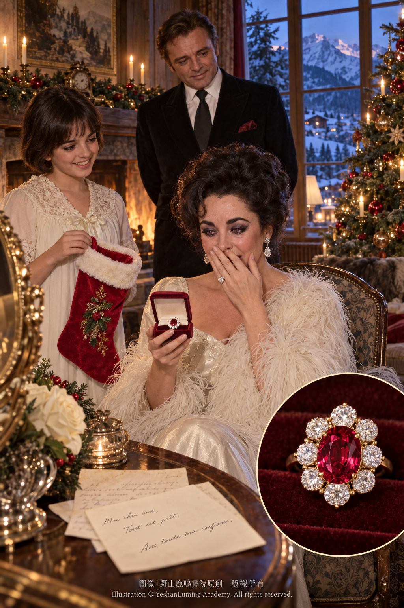
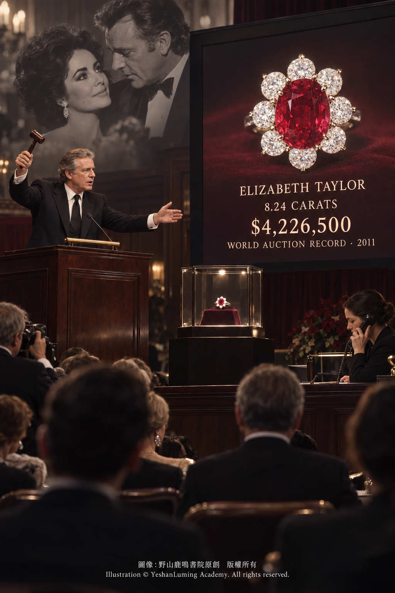

伊莉莎白·泰勒紅寶石 · 聖誕襪裡的好萊塢傳奇The Elizabeth Taylor Ruby · A Hollywood Legend Hidden in a Christmas Stocking
The World of Gemstones · Ruby SeriesThe Elizabeth Taylor Ruby · A Hollywood Legend Hidden in a Christmas Stocking
The World of Gemstones · Ruby Series伊莉莎白·泰勒紅寶石 · 聖誕襪裡的好萊塢傳奇
寶石世界·紅寶石篇
寶石世界·紅寶石篇（115）The World of Gemstones · Ruby Series (115)
在好萊塢的黃金時代，如果有一位女性的容顏、性格與人生能夠與璀璨的彩色寶石彼此映照，那必然是伊莉莎白·泰勒（Elizabeth Taylor）。
她不僅以非凡的美貌、傳奇的銀幕生涯和兩座奧斯卡最佳女主角獎聞名，也因收藏了一批世界級珠寶而在現代珠寶史上留下了獨特的位置。
對泰勒而言，珠寶從來不只是財富與奢華的象徵。每一件重要珠寶背後，往往都記錄著一段感情、一個人生時刻，或者一位曾經深刻影響她的人。
在她的眾多珍藏中，有一枚鑲嵌8.24克拉緬甸紅寶石的戒指，承載著她與理查·波頓（Richard Burton）之間最著名的一段珠寶故事。
理查·波頓是泰勒一生中最重要、也最受公眾關注的伴侶之一。他們的感情熱烈而複雜，曾經結婚、離婚，後來又再次結婚。兩人的關係不僅成為20世紀娛樂新聞中最受矚目的故事，也留下了一批與愛情、承諾和共同生活密切相連的著名珠寶。
這枚梵克雅寶（Van Cleef & Arpels）紅寶石鑽石戒指，便是其中最令人難忘的一件。
故事開始於波頓對泰勒作出的一個承諾。
泰勒非常喜愛紅寶石，但波頓並不願意隨便購買一顆普通的紅寶石送給她。他希望找到一顆真正出眾的寶石：顏色必須純正而鮮明，品質也必須足以配得上泰勒對珠寶的眼光。
然而，尋找一顆大顆粒、高品質的天然紅寶石並不是一件容易的事。紅寶石的紅色主要來自剛玉晶體中的微量鉻元素；鉻在產生紅色的同時，也可能增加晶體生長時的內部應力。因此，重量、顏色、透明度與完整性俱佳的大型天然紅寶石，在自然界中極為罕見，真可謂可遇而不可求。
據伊莉莎白·泰勒官方網站記載，波頓為履行這項承諾，尋覓了大約四年。最後，他透過梵克雅寶的皮埃爾·雅寶（Pierre Arpels），找到了一顆重達8.24克拉的緬甸紅寶石。
這顆寶石當時被稱為「Puertas Ruby」。它採用橢圓形刻面切工，周圍環繞著八顆圓形切割鑽石，被鑲嵌成一枚華麗而端莊的戒指。
在好萊塢的黃金時代，如果有一位女性的容顏、性格與人生能夠與璀璨的彩色寶石彼此映照，那必然是伊莉莎白·泰勒（Elizabeth Taylor）。
她不僅以非凡的美貌、傳奇的銀幕生涯和兩座奧斯卡最佳女主角獎聞名，也因收藏了一批世界級珠寶而在現代珠寶史上留下了獨特的位置。
對泰勒而言，珠寶從來不只是財富與奢華的象徵。每一件重要珠寶背後，往往都記錄著一段感情、一個人生時刻，或者一位曾經深刻影響她的人。
在她的眾多珍藏中，有一枚鑲嵌8.24克拉緬甸紅寶石的戒指，承載著她與理查·波頓（Richard Burton）之間最著名的一段珠寶故事。
理查·波頓是泰勒一生中最重要、也最受公眾關注的伴侶之一。他們的感情熱烈而複雜，曾經結婚、離婚，後來又再次結婚。兩人的關係不僅成為20世紀娛樂新聞中最受矚目的故事，也留下了一批與愛情、承諾和共同生活密切相連的著名珠寶。
這枚梵克雅寶（Van Cleef & Arpels）紅寶石鑽石戒指，便是其中最令人難忘的一件。
故事開始於波頓對泰勒作出的一個承諾。
泰勒非常喜愛紅寶石，但波頓並不願意隨便購買一顆普通的紅寶石送給她。他希望找到一顆真正出眾的寶石：顏色必須純正而鮮明，品質也必須足以配得上泰勒對珠寶的眼光。
然而，尋找一顆大顆粒、高品質的天然紅寶石並不是一件容易的事。紅寶石的紅色主要來自剛玉晶體中的微量鉻元素；鉻在產生紅色的同時，也可能增加晶體生長時的內部應力。因此，重量、顏色、透明度與完整性俱佳的大型天然紅寶石，在自然界中極為罕見，真可謂可遇而不可求。
據伊莉莎白·泰勒官方網站記載，波頓為履行這項承諾，尋覓了大約四年。最後，他透過梵克雅寶的皮埃爾·雅寶（Pierre Arpels），找到了一顆重達8.24克拉的緬甸紅寶石。
這顆寶石當時被稱為「Puertas Ruby」。它採用橢圓形刻面切工，周圍環繞著八顆圓形切割鑽石，被鑲嵌成一枚華麗而端莊的戒指。
鮮明的紅寶石構成整枚戒指的視覺中心，周圍鑽石所反射的白色光芒則進一步襯托出主石的紅色。這種設計並不以繁複結構掩蓋寶石，而是利用簡潔、對稱的鑽石排列，把觀者的目光集中在中央紅寶石上。
1968年聖誕節，泰勒與家人正在瑞士格斯塔德（Gstaad）的Chalet Ariel度假。
為了保守這項聖誕驚喜的秘密，波頓一直暗中與皮埃爾·雅寶保持聯絡。當時的通訊遠不如今天方便，兩人甚至以法文書信商議這件禮物的安排，希望在最後一刻才讓泰勒看見這顆紅寶石。
聖誕節當天，泰勒正在為晚宴梳妝。她的女兒Liza來到房間，把一隻聖誕襪帶到她面前。藏在襪子深處的，是一個小巧的珠寶盒。
當泰勒打開盒子時，那顆波頓尋找了多年的紅寶石終於出現在她眼前。

Click to enlarge
泰勒後來回憶，她看見戒指時激動得放聲尖叫，聲音彷彿在格斯塔德的群山之間迴盪。她知道波頓一直在為她尋找一顆完美的紅寶石，但直到那一刻，她才真正看見這份承諾最後的模樣。
一顆經過多年尋覓的紅寶石，被藏在一隻看似普通的聖誕襪裡。昂貴與童真、奢華與親密，在那個瞬間交會，也使這枚戒指成為泰勒珠寶故事中最富戲劇性的一件作品。
泰勒珍愛這枚戒指，也曾在公開場合及銀幕上佩戴它。1973年，她在電影《守夜》（Night Watch）中便佩戴了這枚私人收藏的紅寶石戒指，使它不僅進入好萊塢珠寶史，也成為她銀幕形象的一部分。
2011年3月23日，伊莉莎白·泰勒在洛杉磯去世。同年12月，佳士得在紐約舉行「伊莉莎白·泰勒珍藏」系列拍賣，將她一生收藏的珠寶、服飾、藝術品及其他私人珍藏分場拍賣。
2011年12月13日，這枚8.24克拉紅寶石戒指出現在「傳奇珠寶晚間拍賣」上。
佳士得給出的拍前估價為100萬至150萬美元。然而，這枚戒指所具有的價值，早已超越紅寶石、鑽石和貴金屬本身。它同時擁有大顆粒緬甸紅寶石的稀有性、梵克雅寶的品牌與製作背景，以及伊莉莎白·泰勒和理查·波頓所留下的傳奇情感故事。
經過多位競標者的角逐，戒指最終以4,226,500美元成交。這一數字是包括買家佣金在內的成交總價，並非拍賣官敲槌時的落槌價格。

Click to enlarge
按照成交總價計算，這顆8.24克拉紅寶石的平均每克拉價格約為512,925美元，也就是每克拉約51.29萬美元。這一結果創下了當時紅寶石每克拉拍賣價格的世界紀錄。
這枚戒指能夠創下當時紅寶石每克拉拍賣價格的世界紀錄，伊莉莎白·泰勒與理查·波頓的名人效應和情感故事無疑發揮了重要作用。然而，如果紅寶石本身不是一顆品質出眾的珍貴寶石，單靠名人效應也很難在世界級珠寶拍賣中獲得如此高的評價。
從寶石學角度來看，8.24克拉已經是一顆重量相當可觀的刻面紅寶石。對紅寶石而言，重量增加的同時，如果仍能維持鮮明的顏色、良好的透明度與均衡的切工，其稀有程度也會迅速上升。
目前可以從公開拍賣及歷史資料中確定的核心事實，這是一顆重達8.24克拉、具有鮮明紅色與良好視覺品質的緬甸紅寶石，採用橢圓形刻面切工，並由梵克雅寶鑲嵌成紅寶石鑽石戒指。
作為天然紅寶石，它屬於剛玉礦物，具有莫氏硬度9、折射率通常約為1.762—1.770、雙折射約為0.008、相對密度約為4.00等基本物理性質。
這顆紅寶石之所以能夠達到如此高的拍賣價格，來自多個層面的共同作用：大顆粒緬甸紅寶石的天然稀有性、梵克雅寶的珠寶設計、理查·波頓長達四年的尋覓、1968年充滿溫情的聖誕禮物故事、泰勒本人的珍藏與佩戴，以及2011年佳士得拍賣所確認的市場地位。
即使沒有波頓與泰勒所帶來的名人效應，這顆8.24克拉緬甸紅寶石本身仍然是一顆引人注目的珍貴寶石；反過來說，如果戒指中央只是一顆品質普通的紅寶石，那段聖誕往事與泰勒的名人光環，也未必能使它在珠寶史上產生如此持久的影響。
正是這顆紅寶石的稀有品質與名人故事的交會，使它成為一件獨一無二、無法僅以克拉重量和市場價格衡量的珠寶。
伊莉莎白·泰勒紅寶石戒指的傳奇，不只在於它曾經創下每克拉價格的世界拍賣紀錄，也不只在於它出自一家著名珠寶品牌。真正令人難忘的，是一個男人曾經許下承諾，要為心愛的女人尋找一顆最美麗的紅寶石；四年之後，這顆寶石跨越珠寶商、收藏家與歐洲群山，最後被藏進一隻小小的聖誕襪裡。
多年以後，戒指雖然離開了泰勒的手指，進入另一位收藏家的世界，但是，那個發生在1968年格斯塔德聖誕節的瞬間，卻永遠留在了它的紅色光芒之中。
伊莉莎白·泰勒紅寶石戒指主要資料
名稱： 伊莉莎白·泰勒紅寶石戒指
英文名稱： The Elizabeth Taylor Ruby and Diamond Ring
曾用名稱： Puertas Ruby
珠寶種類： 紅寶石鑽石戒指
主石： 天然紅寶石
重量： 8.24克拉
產地： 緬甸
切工： 橢圓形刻面切工
顏色： 鮮明而濃郁的紅色；常被珠寶資料形容為具有「鴿血般」的色彩
處理狀態： 現有公開資料不足以核實，應以原始實驗室報告為準
配石： 八顆圓形切割鑽石
珠寶品牌： 梵克雅寶（Van Cleef & Arpels）
贈送者： 理查·波頓
受贈者： 伊莉莎白·泰勒
贈送時間： 1968年聖誕節
贈送地點： 瑞士格斯塔德
尋覓時間： 約四年
拍賣日期： 2011年12月13日
拍賣行： 紐約佳士得
拍賣專場： 伊莉莎白·泰勒珍藏——傳奇珠寶晚間拍賣
拍前估價： 100萬至150萬美元
成交總價： 4,226,500美元，包括買家佣金
平均每克拉成交價： 約512,925美元
拍賣紀錄： 創下當時紅寶石每克拉拍賣價格的世界紀錄
歷史意義： 理查·波頓經過約四年尋覓後送給伊莉莎白·泰勒的1968年聖誕禮物，也是好萊塢名人珠寶史上最著名的紅寶石戒指之一
（未完待續）
During Hollywood’s golden age, if there was one woman whose beauty, character, and life could be reflected in the brilliance of colored gemstones, it was surely Elizabeth Taylor.
She was renowned not only for her extraordinary beauty, legendary screen career, and two Academy Awards for Best Actress, but also for assembling a collection of world-class jewels that gave her a unique place in modern jewelry history.
To Taylor, jewelry was never merely a symbol of wealth and luxury. Behind each important jewel was often a love story, a moment in her life, or a person who had profoundly influenced her.
Among her many treasures was a ring set with an 8.24-carat Burmese ruby, carrying one of the most celebrated jewelry stories associated with Taylor and Richard Burton.
Richard Burton was one of the most important—and most closely watched—partners of Taylor’s life. Their relationship was passionate and complicated: they married, divorced, and later married each other again. Their romance not only became one of the most closely followed stories in 20th-century entertainment news but also left behind a remarkable group of jewels intimately connected with love, promises, and the life they shared.
Among the most unforgettable of these was this ruby and diamond ring by Van Cleef & Arpels.
Its story began with a promise Burton made to Taylor.
Taylor adored rubies, but Burton was unwilling to buy her an ordinary stone merely for the sake of giving her one. He wanted to find something truly exceptional: its color had to be pure and vivid, and its quality had to be worthy of Taylor’s discerning eye for jewelry.
Finding a large, high-quality natural ruby, however, is no easy task. Ruby owes its red color primarily to trace amounts of chromium within the corundum crystal. While chromium produces this beautiful color, it may also increase internal stress during crystal growth. Consequently, large natural rubies combining exceptional weight, color, transparency, and structural integrity are exceedingly rare—treasures that may be sought for years and encountered only by extraordinary fortune.
According to Elizabeth Taylor’s official website, Burton searched for approximately four years to fulfill his promise. At last, through Pierre Arpels of Van Cleef & Arpels, he found an 8.24-carat Burmese ruby.
At the time, the gemstone was known as the “Puertas Ruby.” The oval faceted ruby was surrounded by eight circular-cut diamonds and mounted as an elegant and magnificent ring.
During Hollywood’s golden age, if there was one woman whose beauty, character, and life could be reflected in the brilliance of colored gemstones, it was surely Elizabeth Taylor.
She was renowned not only for her extraordinary beauty, legendary screen career, and two Academy Awards for Best Actress, but also for assembling a collection of world-class jewels that gave her a unique place in modern jewelry history.
To Taylor, jewelry was never merely a symbol of wealth and luxury. Behind each important jewel was often a love story, a moment in her life, or a person who had profoundly influenced her.
Among her many treasures was a ring set with an 8.24-carat Burmese ruby, carrying one of the most celebrated jewelry stories associated with Taylor and Richard Burton.
Richard Burton was one of the most important—and most closely watched—partners of Taylor’s life. Their relationship was passionate and complicated: they married, divorced, and later married each other again. Their romance not only became one of the most closely followed stories in 20th-century entertainment news but also left behind a remarkable group of jewels intimately connected with love, promises, and the life they shared.
Among the most unforgettable of these was this ruby and diamond ring by Van Cleef & Arpels.
Its story began with a promise Burton made to Taylor.
Taylor adored rubies, but Burton was unwilling to buy her an ordinary stone merely for the sake of giving her one. He wanted to find something truly exceptional: its color had to be pure and vivid, and its quality had to be worthy of Taylor’s discerning eye for jewelry.
Finding a large, high-quality natural ruby, however, is no easy task. Ruby owes its red color primarily to trace amounts of chromium within the corundum crystal. While chromium produces this beautiful color, it may also increase internal stress during crystal growth. Consequently, large natural rubies combining exceptional weight, color, transparency, and structural integrity are exceedingly rare—treasures that may be sought for years and encountered only by extraordinary fortune.
According to Elizabeth Taylor’s official website, Burton searched for approximately four years to fulfill his promise. At last, through Pierre Arpels of Van Cleef & Arpels, he found an 8.24-carat Burmese ruby.
At the time, the gemstone was known as the “Puertas Ruby.” The oval faceted ruby was surrounded by eight circular-cut diamonds and mounted as an elegant and magnificent ring.
The vivid ruby forms the visual center of the ring, while the white brilliance reflected by the surrounding diamonds further accentuates the color of the central stone. Rather than concealing the ruby beneath an elaborate design, the setting uses a simple, symmetrical arrangement of diamonds to focus the observer’s attention directly upon it.
At Christmas in 1968, Taylor and her family were vacationing at Chalet Ariel in Gstaad, Switzerland.
To preserve the secrecy of the Christmas surprise, Burton remained discreetly in contact with Pierre Arpels. Communication was far less convenient than it is today, and the two men even discussed the arrangements for the gift through letters written in French, hoping that Taylor would not see the ruby until the final moment.
On Christmas Day, Taylor was preparing for dinner when her daughter Liza entered the room and brought her a Christmas stocking. Hidden deep inside was a small jewelry box.
When Taylor opened the box, the ruby Burton had spent years searching for finally appeared before her.
Click to enlarge
Taylor later recalled that she was so overwhelmed by the sight of the ring that she screamed with excitement, her voice seeming to echo through the mountains around Gstaad. She had known that Burton was searching for a perfect ruby, but only at that moment did she finally see the form his promise had taken.
A ruby found only after years of searching had been hidden inside an apparently ordinary Christmas stocking. Preciousness and childlike delight, luxury and intimacy, came together in that single moment, making the ring one of the most dramatic jewels in Taylor’s celebrated collection.
Taylor treasured the ring and wore it both in public and on screen. In 1973, she wore this jewel from her private collection in the film *Night Watch*, allowing it to enter not only the history of Hollywood jewelry but also the visual legacy of her screen image.
Elizabeth Taylor died in Los Angeles on March 23, 2011. In December of that year, Christie’s held a series of auctions in New York devoted to “The Collection of Elizabeth Taylor,” offering the jewelry, clothing, works of art, and other personal possessions she had assembled throughout her life.
On December 13, 2011, the 8.24-carat ruby ring appeared in the evening sale of “The Legendary Jewels.”
Christie’s gave the ring a pre-sale estimate of $1 million to $1.5 million. Its value, however, had long since transcended that of the ruby, diamonds, and precious metal alone. It united the rarity of a large Burmese ruby, the name and craftsmanship of Van Cleef & Arpels, and the legendary emotional history left by Elizabeth Taylor and Richard Burton.
After competition among several bidders, the ring sold for $4,226,500. This figure was the total price including the buyer’s premium, rather than the hammer price announced when the auctioneer brought down the gavel.
Click to enlarge
Based on the total sale price, the 8.24-carat ruby achieved approximately $512,925 per carat. The result established a world auction record at the time for the price per carat paid for a ruby.
Elizabeth Taylor and Richard Burton’s celebrity and romantic history undoubtedly played an important role in enabling the ring to achieve a world-record price per carat. Yet if the ruby itself had not been an outstanding gemstone, celebrity provenance alone would have been unlikely to command such a high valuation at a world-class jewelry auction.
From a gemological perspective, 8.24 carats is already a highly significant weight for a faceted ruby. As the size of a ruby increases, its rarity rises rapidly if the stone can also retain vivid color, good transparency, and balanced cutting.
The central facts that can be established from public auction and historical records are that this is an 8.24-carat Burmese ruby with vivid red color and strong visual appeal, fashioned as an oval faceted stone and mounted by Van Cleef & Arpels in a ruby and diamond ring.
As a natural ruby, it belongs to the corundum mineral species and possesses the fundamental physical properties associated with ruby: a Mohs hardness of 9, a typical refractive index of approximately 1.762–1.770, birefringence of about 0.008, and a specific gravity of approximately 4.00.
The ruby achieved such a remarkable auction price through the combined influence of several factors: the natural rarity of a large Burmese ruby, the jewelry design of Van Cleef & Arpels, Richard Burton’s four-year search, the heartwarming story of the 1968 Christmas gift, Taylor’s ownership and use of the ring, and the market standing confirmed by the 2011 Christie’s auction.
Even without the celebrity associated with Burton and Taylor, this 8.24-carat Burmese ruby would remain an exceptional and highly desirable gemstone. Conversely, had the ring contained only an ordinary ruby, the Christmas story and Taylor’s fame might not have given it such an enduring place in jewelry history.
It is precisely this union of the ruby’s rarity and its celebrated human story that makes the ring unique—a jewel whose significance cannot be measured solely by carat weight or market price.
The legend of Elizabeth Taylor’s ruby ring lies not only in the world auction record it once achieved per carat, nor merely in its creation by a renowned jewelry house. What makes it truly unforgettable is the story of a man who promised to find the most beautiful ruby for the woman he loved. Four years later, after passing through the worlds of jewelers, collectors, and the mountains of Europe, that ruby was finally hidden inside a small Christmas stocking.
Many years later, the ring left Taylor’s finger and entered the world of another collector. Yet the moment that unfolded in Gstaad at Christmas in 1968 remains forever preserved within its red radiance.
Essential Information About the Elizabeth Taylor Ruby Ring
Name: Elizabeth Taylor Ruby Ring
English Name: The Elizabeth Taylor Ruby and Diamond Ring
Former Name: Puertas Ruby
Jewelry Type: Ruby and diamond ring
Principal Gemstone: Natural ruby
Weight: 8.24 carats
Origin: Burma
Cut: Oval faceted cut
Color: Vivid, richly saturated red; frequently described in jewelry accounts as having a “pigeon’s-blood-like” color
Treatment Status: No definitive information has been made publicly available
Accent Stones: Eight circular-cut diamonds
Jewelry House: Van Cleef & Arpels
Given By: Richard Burton
Recipient: Elizabeth Taylor
Date Presented: Christmas 1968
Place Presented: Gstaad, Switzerland
Length of Search: Approximately four years
Auction Date: December 13, 2011
Auction House: Christie’s New York
Auction Sale: The Collection of Elizabeth Taylor—The Legendary Jewels Evening Sale
Pre-Sale Estimate: $1 million–$1.5 million
Total Sale Price: $4,226,500, including the buyer’s premium
Average Price per Carat: Approximately $512,925
Auction Record: Established the world auction record at the time for the price per carat paid for a ruby
Historical Significance: A Christmas gift presented to Elizabeth Taylor by Richard Burton in 1968 after a search lasting approximately four years, and one of the most celebrated ruby rings in Hollywood jewelry history
(To be continued)